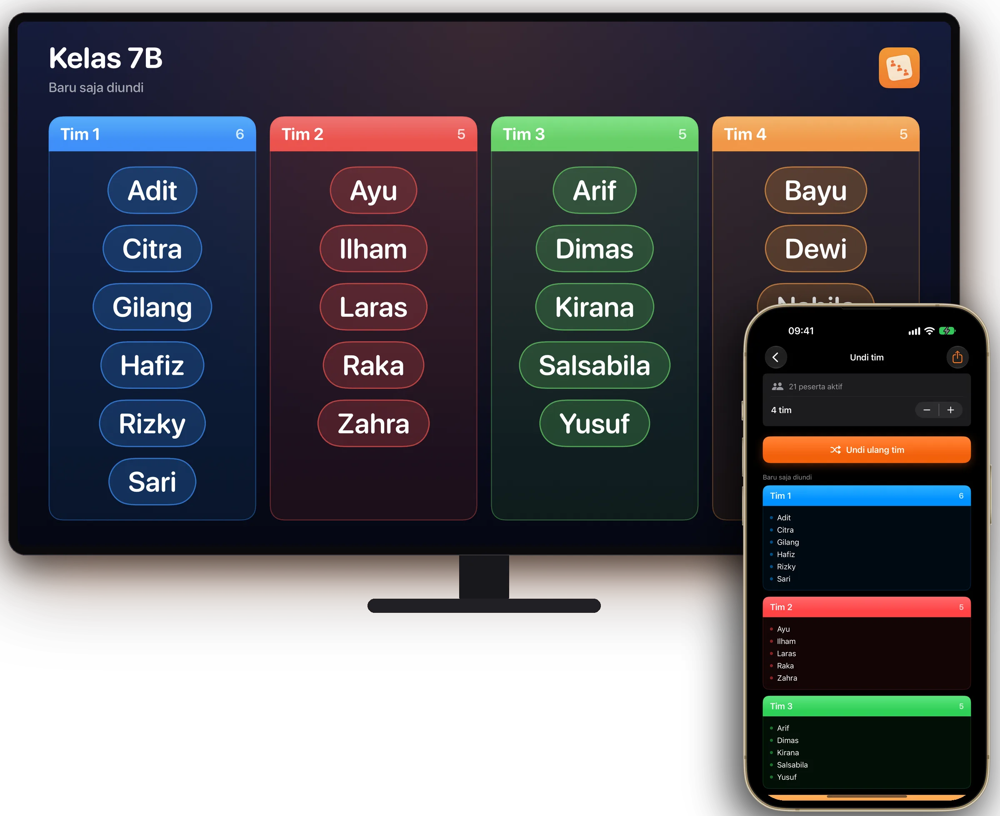
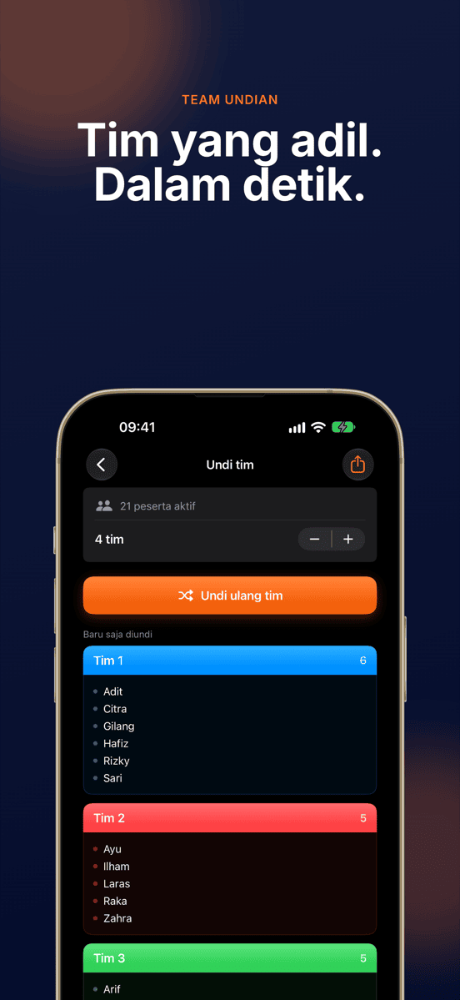
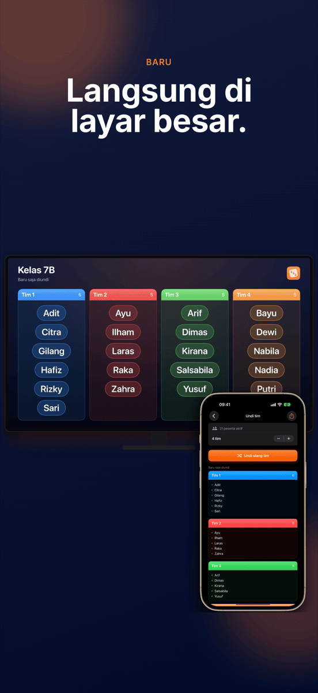
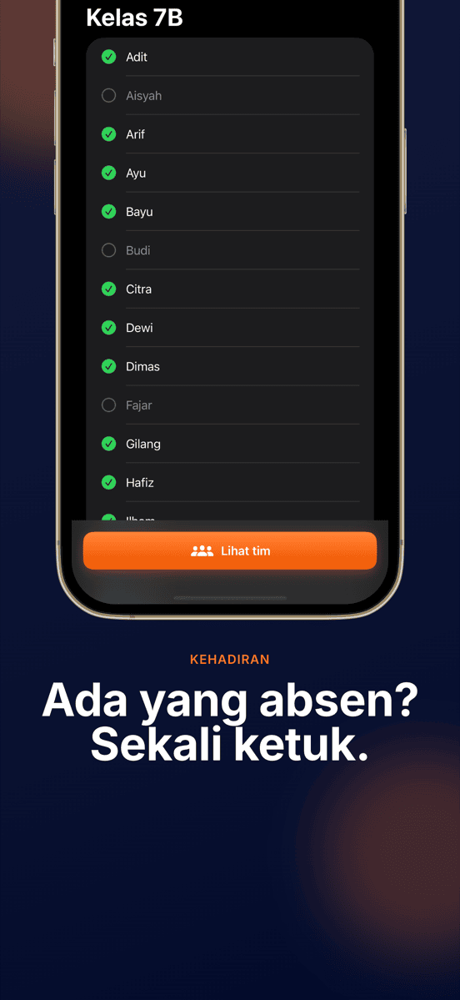
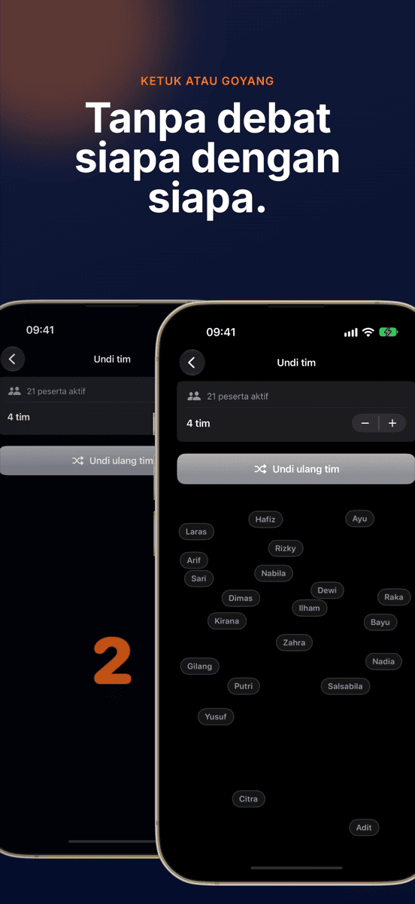
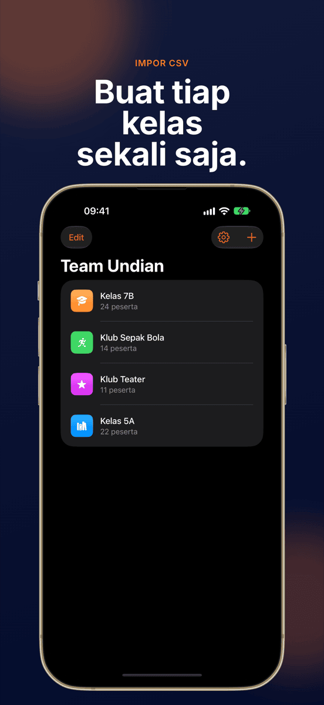
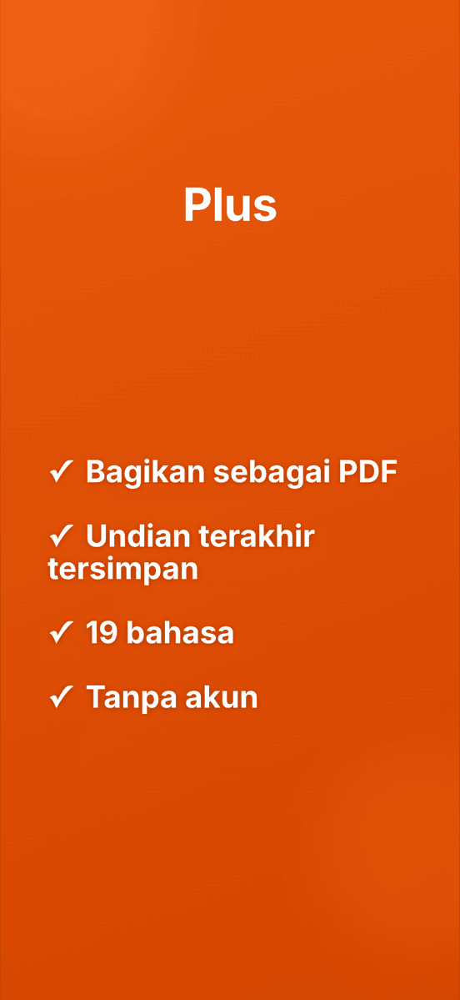

BARULangsung di layar besar
Team Undian
Tim yang adil. Dalam detik.







Tim tanpa perdebatan.
Langsung di layar besar
Lewat AirPlay atau kabel, seluruh kelas melihat tim terbentuk.
Sekali ketuk, selesai
Semua orang dibagi ke tim secara acak dan merata.
Grup tetap tersimpan
Buat kelas, tim, atau klub sekali saja lalu undi sesering yang Anda mau. Setiap grup menyimpan undian terakhirnya.
Tidak hadir? Tidak ikut
Hapus centang yang tidak hadir dengan sekali ketuk, undian akan melewati mereka.
Jumlah tim bebas
Berpasangan, bertiga, berempat, atau tim yang lebih besar.
Diacak di depan semua
Animasi mengacak semua nama di depan semua orang. Goyangkan perangkat untuk memulai babak baru.
Semudah itu.
Buat grup
Ketik nama atau impor CSV.
Hapus yang tidak hadir
Sekali ketuk untuk setiap nama yang absen hari ini.
Undi
Pilih jumlah tim, ketuk, lalu tonton.
Tampilkan
Di proyektor atau sebagai PDF.
Pertanyaan umum
Bagaimana cara membagi grup menjadi tim secara acak?
Buat grup Anda sekali di Team Undian, tambahkan peserta, lalu mulai undian. Aplikasi membagi semua orang secara acak dan merata ke jumlah tim yang Anda pilih.
Untuk siapa Team Undian?
Untuk siapa saja yang sering membagi grup menjadi tim: guru, pelatih, fasilitator lokakarya, klub, dan penyelenggara acara.
Bisakah saya memilih jumlah tim sendiri?
Bisa. Anda menentukan berapa tim, dari berpasangan sampai tim besar, dan Team Undian membagi peserta secara merata.
Apakah data saya disimpan atau dikirim?
Semua grup dan nama hanya tersimpan di perangkat Anda. Tidak ada data yang dikirim ke server mana pun.
Bisakah saya mengimpor daftar nama dari Excel?
Bisa. Ekspor daftar sebagai CSV dari Excel atau Google Sheets lalu impor ke Team Undian. Seluruh kelas siap dalam hitungan detik.
Bisakah undian ditampilkan di proyektor?
Bisa. Saat iPhone atau iPad terhubung ke proyektor, Apple TV, atau monitor lewat AirPlay atau kabel, Team Undian menampilkan undian di sana secara langsung dalam format lanskap. Aplikasi tetap Anda kendalikan dari perangkat.
Berapa harga Team Undian?
Mengunduh dan undian pertama gratis. Untuk undian berikutnya Anda memerlukan langganan Pro, bulanan atau tahunan, yang bisa dicoba gratis lebih dulu. Team Undian berjalan di iPhone dan iPad dengan iOS 17 atau lebih baru.